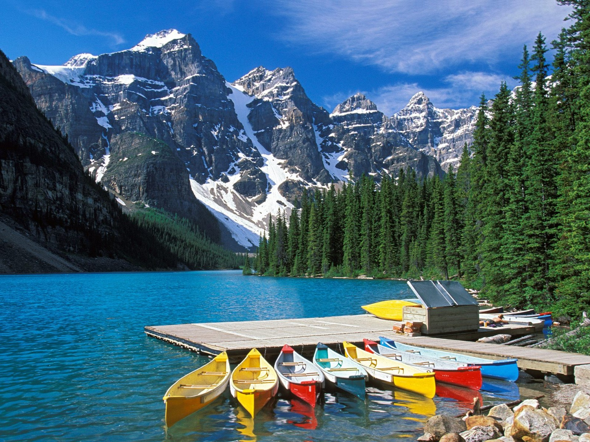
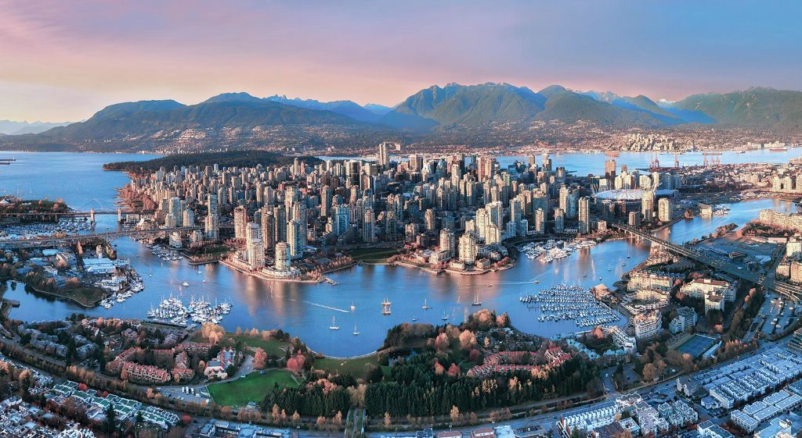

КЛИМАТ
Вследствие большой широтной протяженности и меридионального расположения географических зон климат Канады чрезвычайно разнообразен. Горные хребты Кордильер ограничивают приток тихоокеанских воздушных масс, зато холодный.
ОЗЕРА И РЕКИ
ИНТЕРЕСНЫЕ ФАКТЫ
С 1858 г. столицей Канады является основанная в 1827 г. Оттава. Вместе с соседним городом Халл она образует крупную метрополию.
Значительную часть территории Канады занимают озера, большинство из которых имеют ледниковое происхождение.
ПРИРОДА
Лежащую на Крайнем Севере зону арктических пустынь по мере продвижения к югу сменяет тундра, начинающаяся от кромки вечных снегов. В холодном климате на скованной вечной мерзлотой почве выживает лишь скудная тундровая растительность — однолетние травы и кустарнички. Далее к югу тундра переходит в редколесье, а затем в широкую полосу бореальных лесов. В таежных массивах преобладают хвойные породы, и только на юге появляются незначительные вкрапления лиственного древостоя. На побережье обитают тюлени и моржи, а на Крайнем Севере — белые медведи. К типичным жителям тундры относятся также северные олени, полярные зайцы, песцы и лемминги, а из птиц — полярные совы и тундровые куропатки. В зоне тайги обитают лоси, олени вапити, красные белки, летяги, дикобразы, куницы и бобры. Для смешанных лесов характерны такие крупные хищники, как медведь барибал, гризли, волк, рысь и росомаха. Реки и озера богаты рыбой.
.jpg)